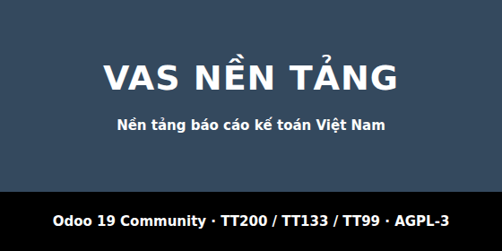
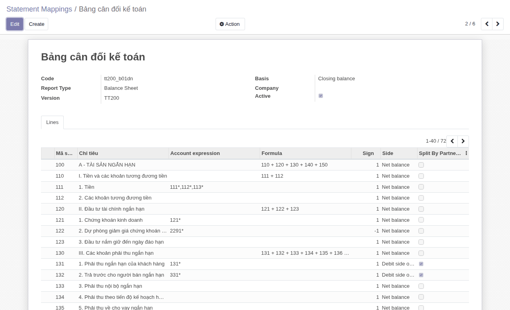

Kế toán → Cấu hình → Statement Mappings, trên dữ liệu TT200 do l10n_vn_vas_reports cài sẵn.
Mỗi chỉ tiêu báo cáo tài chính là dữ liệu: một biểu thức tài khoản hoặc một công thức từ các chỉ tiêu khác, sửa ngay trên giao diện.

l10n_vn_vas_reports, không thêm menu riêng.vn.ledger.provider: module riêng thay được bất kỳ bộ máy hay nguồn dữ liệu nào cho từng database chỉ bằng một _inherit.eval.Thuộc bộ Vietnam VAS Reports cho Odoo 18 Community: sổ sách và báo cáo tài chính (l10n_vn_vas_reports), kho (l10n_vn_stock_reports), sản xuất (l10n_vn_mrp_reports) và tài sản cố định (l10n_vn_asset_reports), dùng chung nền vn_core. Hỗ trợ Thông tư 200/2014, 133/2016 và 99/2025. Miễn phí, mã nguồn mở, giấy phép AGPL-3.